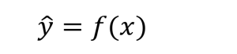
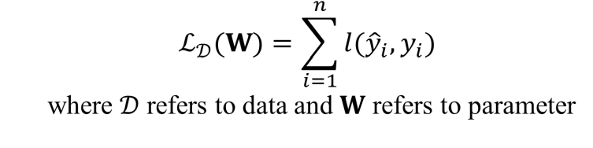
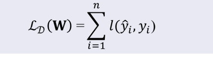
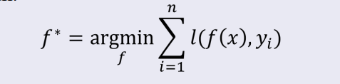
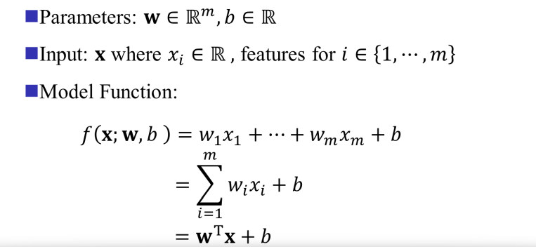
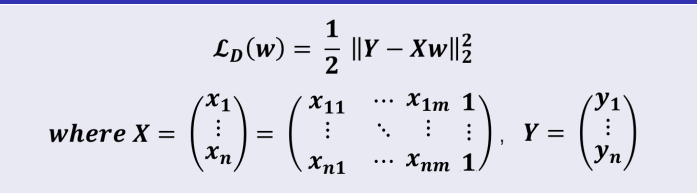
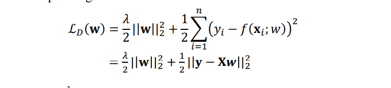
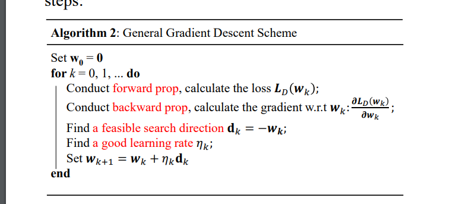

# Machine Learning
基本要素：
- Data：输入，不同的应用有不同的数据
- Model：类似于函数
- Loss Function：抽象的本质的模型
约等于 Looking for a Function
steps：
- 定义函数集
- 给函数评分（Goodness）
- 选择最好的函数
- 对于预测 y 有一个 function：y=f（x） --》 数据
- Ld (W) = l (yi', yi) 的全数据之和 --》 模型
# Data 数据集
D = {(xi, yi)}n i=1
x 是输入，使用列向量表示；
y 是输出；
n 是数据的个数
# 损失函数 Loss function
对值的预测：
损失函数定义：数据集中的所有数据值的预测值和真实值之间的差值的求和

# Supervised Learning 监督学习
使用 labeled training data 来训练模型，模型的目标是预测新的数据的输出值。监督学习的特征是训练数据是带有标签的数据。
# Unsupervised Learning 无监督学习
Learning the inner connection between different training samples , but without specific labels/
- 模型通过比较得到数据集隐藏的结构
- K-means clustering
# Reinforcement Learning 强化学习
强化学习包括下面几个部分：
- Agent：智能体，决策者
- Environment：环境，智能体所处的环境
- Action：智能体在环境中的行为
- Reward：智能体在环境中的行为的反馈
- State：智能体在环境中的状态
# 1 Linear Regression and Gradient Descent 线性回归与梯度下降
Challenges in Learning: Uncertainty and Unlinear
线性回归是一种线性模型，通过线性回归模型可以预测连续值的输出。线性回归模型的目标是找到一条直线，使得数据集中的所有数据点到直线的距离之和最小。线性回归模型的损失函数是均方误差，均方误差是预测值和真实值之间的差值的平方的求和。
两种损失函数：
absolute loss function：L(y', y) = |y' - y|
squared loss function：L(y', y) = (y' - y)^2 / 2
Total loss function：

# Regression
Find the best f by solvig the following optimization problem:

即找到一个函数 f 使得 total loss function 最小
这个 f 如何定义呢？

找到合适的 W 向量和 b 值使得 total loss function 最小
根据这个 f 可以将 total loss function 转化为：

那么如何找到这个 W 和 b 呢？
# Closed-form Solution
solution:
# Regularized Least Squares Regression

𝜆 is called trade-off parameter or regularization parameter
得到的 solution：
# Gradient Descent
